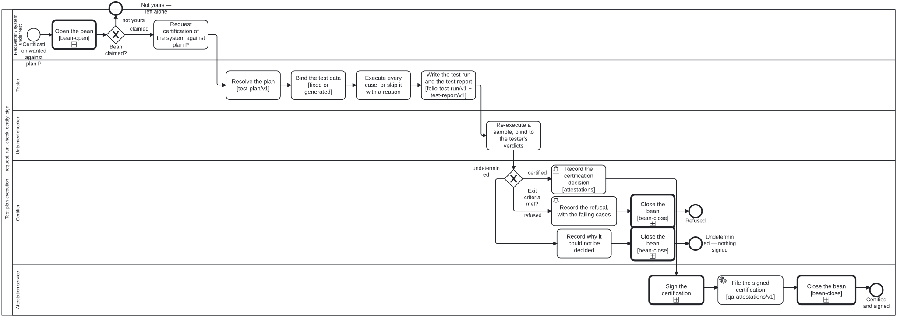

Generated from
cat-harness/processes/sdlc/test-plan-execution.bpmnbygen-processes-viz.ts— do not edit here. All processes
Process_TestPlanExecution · strict · 11 step(s)
Executing a test-plan/v1 against a system under test and taking the result to a certification decision: requested by (or for) the system, run by a tester, re-executed in sample by an untainted checker, decided by a certifier through the plan’s exit-criteria table, and signed through qa-report-signing.bpmn.
You are in this process when somebody wants a system — a skill, an agent, a tool, a machine, an IG or a process — certified against a named plan. Executing a plan with no certification in view is still this process; it ends at undetermined or refused without anything being signed.
The run, the report and the certification are three records, and they point backwards: the run at the plan, the report at the run, the certification at the report. The certification is a judgement and lives under the declared attestations graph, on main; the report is derived and lives on the qa-reports branch.

| lane | role | what it does here |
|---|---|---|
| Requester / system under test | test-requester |
The system under test, or whoever speaks for it, asking for certification against plan P at a named version. Its only task is the request, and that is the design rather than an omission: the system under test never writes a verdict about itself, so after this lane it is the SUBJECT of the process and never a performer in it. |
| Tester | tester |
Runs the plan against the system: resolves it, binds its fixed or generated test data, executes every case or skips it with a reason, and writes the folio-test-run/v1 and the test-report/v1. Untainted from the system under test — never the same actor — and it does not certify: what it writes is what the certifier decides on. |
| Untainted checker | untainted-checker |
A second party re-executing a sample of the cases from the plan and the data alone, never from the tester’s verdicts. It rules on nothing: whether it agrees is a fact the certification table reads. One party doing both halves is not this check — it would compare a run with its own paraphrase of itself. |
| Certifier | certifier |
The accountable party for the decision, a specialisation of the stakeholder. The gateway is computed from the plan’s exit-criteria table; what the certifier adds, and what makes it a judgement, is recording the decision under their name. Never the tester and never the system under test. |
| Attestation service | attestation-service |
Signs the certification and files it. Reached only from certified: a refusal and an undetermined result are recorded by the certifier and signed by nobody. The signature itself is qa-report-signing.bpmn, called unchanged, whose own gateway chooses the API or a human release authority by the signer’s reach. |
Every one of the 11 step(s) is documented.
| step | lane | skill / sub-process | what it does |
|---|---|---|---|
Request certification of the system against plan PA_Request |
Requester / system under test | test-plan-execution |
Name the plan by id AND version, and the system under test by actor id. The actor must carry the systemUnderTest facet: an actor that has not said it can be tested is not run against a plan by default. The bean this instance tracks is claimed here. |
Resolve the plan [test-plan/v1]A_ResolvePlan |
Tester | test-plan-execution |
The plan parses, names at least one req: requirement, its exitCriteria resolves to a decision in a .dmn that exists, and its scope.kind is the system’s facet kind. A plan that does not resolve is not run — test-plan-resolves audits the same join afterwards. |
Bind the test data [fixed or generated]A_BindData |
Tester | test-plan-execution |
Per bean vm6m: a fixed set is a committed path and counts as evidence only once reviewed; a generated set is template + params + seed and is never materialised. Both feed the run’s data hash, and nothing that feeds the process hash may feed it too. |
Execute every case, or skip it with a reasonA_Execute |
Tester | test-plan-executiontest-engineer |
Every case in dependency order. A case is executed or explicitly skipped with its reason; a case that simply has no verdict is a finding, because it cannot be told from a case nobody ran. |
Write the test run and the test report [folio-test-run/v1 + test-report/v1]A_WriteRun |
Tester | test-plan-execution |
The run records plan {id, version} and sut {actor, version, reach} with its data and process hashes; the report rolls up per plan, never across plans, and goes to the qa-reports branch at tests/plan/sut/run/. No verdict in it may name the system under test as its reviewer. |
Re-execute a sample, blind to the tester’s verdictsA_ReExecuteSample |
Untainted checker | untainted-verificationtest-plan-execution |
Given the plan, the bound data and a sample of case ids — not the report. Says agree, disagree or unknown; unknown (could not run) is said as plainly as a disagreement, because the table reads both the same way and an unknown read as agreement certifies on one party’s word. |
Record the certification decisionA_RecordCertification |
Certifier | test-plan-execution |
The judgement: the certifier records, under their own name, that the system meets plan P at this version on this run. It is written under the declared attestations graph beside the other judgements, never on the qa-reports branch with derived results. A user task, so no agent or pipeline can fill it. |
Record the refusal, with the failing casesA_RecordRefusal |
Certifier | test-plan-execution |
A complete, trusted run in which a case failed. The refusal names the failing cases and is the end of this request; nothing is signed. The bean resolves here because the process has finished — what to do about the failure is a new piece of work. |
Record why it could not be decidedA_RecordUndetermined |
Certifier | test-plan-execution |
The third state: which fact kept the table from deciding — a run not finished, an unknown data hash, an unexecuted case, a checker that disagreed or could not run, or nothing passed. A note and not a resolution, because the request is still open: it needs a re-run or an adjudication, not a verdict. |
Sign the certificationCall_Sign |
Attestation service | calls QA report signingqa-report-signing |
qa-report-signing.bpmn, unchanged: it builds the signable run record, resolves the signer’s reach, and routes the signature to the API or to a human release authority. |
File the signed certification [qa-attestations/v1]A_FileCertification |
Attestation service | test-plan-execution |
The signed certification goes under the declared attestations graph on main (owner ruling D2 (a), D5 default), pointing at the report it certifies. The bean resolves here, once the process has actually finished. |
Every one of the 1 decision(s) is documented.
| decision | what decides it | branches |
|---|---|---|
Exit criteria met?GW_ExitCriteria |
Computed from six facts read off the records — report status, data hash known, unexecuted cases, the checker’s agreement, failed and passed cases — by the table the plan’s exitCriteria names (resolved dynamically; if unresolvable, routes to undetermined and never silently falls back to default). Supplying the branch by hand is refused. |
certified → Record the certification decision refused → Record the refusal, with the failing cases undetermined → Record why it could not be decided |